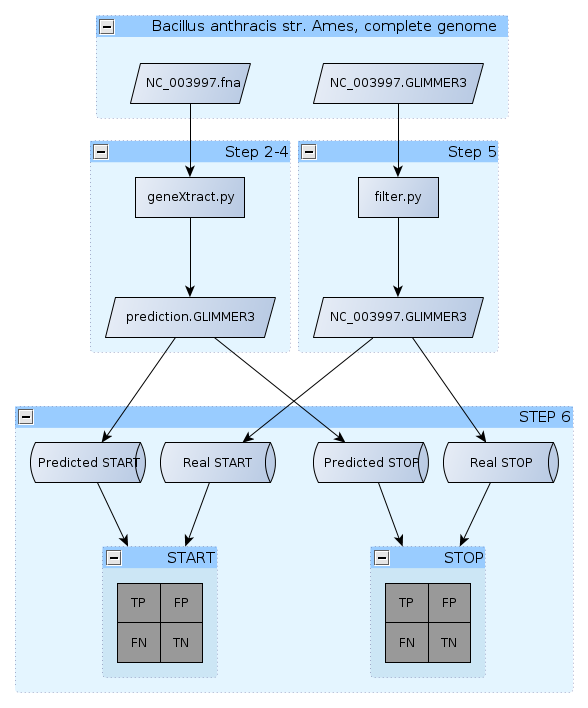

Lab 5 - Gene Prediction!
Introduction
Finding genes in a genome is not a trivial task. As we have
seen in class, a signigficant level of sophistication is required to
complete this task. In this laboratory, you will get the opportunity to
work directly with genome files and implement a simple gene prediction
algorithm. The performance of this algorithm will then be evaluated
with the assumption that the output from GLIMMER3 is completely
accurate.
As you will soon see, prokaryotic genomes can be
treated as any other FASTA file. Since, you already have performed a
conversion from FASTA to a Python string. It is therefore not difficult
to regard a whole genome as a string.
Please use this MS-Word template to answer the questions for this assignment. Print your solution and submit a hard copy
before the following lab.
Here is an overview of the lab:

Designing an algorithm: Assumptions
This sounds like it should
hurt, but it won't. Let's make a series of assumption on the structure
of a gene:
- Genes are defined as ORFs.
- Begin with a ATG
- End with either TAA, TAG, TGA
- Both start and stop codon must be in the same frame.
- START codons are more rare in a random sequence
than either STOP codons.
- Since there can be multiple ATG within a gene, the
earliest in-frame ATG codon from a STOP codon is considered to be the
real START codon.
- Randomly occuring ORFs are very short.
Step 1 - Getting the Data
We'll work with the genome
of
Bacillus
anthracis ames although any genome would work as well.
For reference, the files below could be downloaded from the
Bacillus
anthracis ames folder on
NCBI's FTP site.
- GLIMMER3 output
- Genome in FASTA format.
Save these text files in a new folder called "gene_prediction".
Step 2 - Finding ORFs!
I will assume that you saved the genome as
NC_003997.fna.
The following code has already been created and saved as the file
geneXtract.py.
Download this script and save it in the same "gene_prediction" folder.
Please read through the code and explanation described below. You should understand what each line of code is doing.
Set two application-wide variables:
maxGenomeLength = 50000
minGeneLength = 3 * 100
You will be able to change these experimental parameters later on, but
they will do for now.
Read and clean the genome similarly to what was done in the previous lab.
myfile = open("NC_003997.fna")
# Skip the first line in the file (header info)
myfile.readline()
# Read-in a "chunk" of the genome.
genome = myfile.read( maxGenomeLength )
# Clean-up
genome = genome.replace("\n", "")
myfile.close()
Step 3 - The gene prediction algorithm
Here is a plain English
description of what we are going to do:
Starting at the first base in
the genome, find the position of the first START codon. Once a START
codon is found, find the position of the first STOP codon that is in
the same frame. If the length of the ORF is more than a defined minimum
length, consider all nucleotides including and in-between the position
of the first nucleotide in START and the last nuclotide in STOP to be a
gene. Repeat from the end of this gene until the whole genome has been
scanned.
It would be great if we could just type this in a Python file and make
it happen. However, this description contains ambiguities that would
prevent a computer from executing as desired. The second step of
designing an algorithm is to break down this description into small
steps which are indivually simple to implement using a real programming
language.
lastSTOP = 0
start = 0
stop = 0
for as long as
start
is smaller than the length of the genome
SET start as the index of
the next ATG after lastSTOP.
FIND the next in-frame STOP codon
SET stop as the index of the third base of the STOP codon
IF (
stop - start)
IS LARGER THAN mininim Gene length threshold
WRITE to an outfile a line
in the same format as GLIMMER3
SET lastSTOP to STOP
OTHERWISE
resume SEARCH from
lastSTOP + 1
This translates in Python as:
lastSTOP = 0
start = 0
stop = 0
while start != -1:
# Find the first ATG after
lastSTOP
start = genome.find("ATG", lastSTOP)
# Find the first in-frame STOP codon
for i in range(start, len(genome), 3):
codon = genome[i:i+3]
if codon in ["TAA","TGA","TAG"]:
stop = i + 2
break
# Is the ORF long enough?
if stop - start >= minGeneLength:
print "{0}\t{1}\t{2}".format(start+1,stop+1,stop-start)
lastSTOP = stop + 1
else:
lastSTOP = start + 1
The most arcane lines are these using the .find() string method. This
method returns -1 if no substring are found, this will explain why we
want
to run the algorithm for as long as
start is NOT equal
to -1.
The find method also begins searching at the index provided as the
second parameter. If no second parameter is provided, Python
assumes that this value is 0: which is the beginning of the genome.
Make sure you understand the role of each line in the bigger picture. If in doubt, ask questions.
Now, run the geneXtract.py script.
Compare the output of your program with the GLIMMER3 file. You may also
find the .fna file useful to refer to. Notice how the algorithm failed
to find the START codon of the first gene, although it correctly
identified the STOP codon.
Can
you explain why?
Question 1. Which
assumption on the structure of the prokaryotic gene causes the wrong
identification of the START codon of the first gene?
Step 4 - Writing to a GLIMMER-style outfile
It is now time to generate
an outfile which we will use to evaluate how good is the prediction
algorithm. The output from GLIMMER can be found in the genome folder as
NC_003997.GLIMMER3. Let's have a look at a GLIMMER3 gene entry:
>gi|30260195|ref|NC_003997.3| Bacillus anthracis str. Ames, complete genome
orf00001 407 1747 +2 7.50
...
The first line contains a FASTA style header. Each subsequent line
contains the following tokens:
ORFname
\t first
\t last
\t frame
\t Some Score \n
We can reproduce this output with relative ease. By following these
steps:
- Before looping over the genome, open a file in writing mode called prediction.txt.
- Also before the loop, add a bogus header to the file.
- After the loop, close the file.
- Instead of the print statement found within the loop, use the code below to prepare a string called line and write lineto your output file.
frame = (start % 3) + 1
line = "ORF0000\t{0}\t{1}\t+{2}\t--\n".format(start+1,stop+1,frame)
Uncomment all lines of code in the genXtract.py script that activate these steps.
Run the script again and you should now have a newly created "prediction.txt" file that has the same format as the NC_003997.GLIMMER3 file.
Step 5 - Filtering GLIMMER3
For the sake of
simplicity, we are disregarding all genes encoded on the complementary
strand. We can identify these genes because their coding frame is a
negative value. To compare GLIMMER3 and our method, we should remove
all
negative frame genes from the GLIMMER3 output. Instead of removing,
we'll read the GLIMMER3 file and write to a new file all lines which
have a positive frame (and thus contain the character
+).
Open a new Python file, call it filter.py .
We'll be reading in this file using a different approach: on a
line-per-line basis.
myfile =
open("NC_003997.GLIMMER3")
outfile = open("NC_003997.clean.GLIMMER3", "w")
for line in myfile:
# This is true only if there is a +
character in the string line.
if "+" in line:
outfile.write(line)
outfile.close()
myfile.close()
Execute this script and there should be a new file in your folder.
Step 6 - Evaluating the classification performance
Today, you will be deriving the performance of the prediction manually.
You
may partner to
complete the following two tables (because it is
tedious):
Question 2. Assuming that only ATG can be used as a START codon, manually evaluate the
Sensitivity, Specificity and F-score for the prediction of START and
STOP codons (30,000 first nucleotides). Use the START and STOP positions in GLIMMER3 as the
"truth" reference.
START CODONS
|
TRUE |
FALSE |
| POSITIVE |
|
|
| NEGATIVE |
|
XXX |
Sn =
Sp =
F-score =
STOP CODONS
|
TRUE |
FALSE |
| POSITIVE |
|
|
| NEGATIVE |
|
XXX |
Sn =
Sp =
F-score =
Step 7 - Tweaking the gene model
Let's modify our gene
model such that the codon TTG is also accepted as a START codon. Make a
copy of your gene prediction program and call the copy
geneXtract.alt.py .
The only modification to the code that is needed is to select as
start value the
smallest index returned for both ATG and TTG. Python has a handy
function to compare two number and return the smallest:
smallest = min( a, b )
In the example above, smallest will be assigned to either a or b,
whichever is smaller. In our situation,
a will be
substituted by a the result of a find method call for the next ATG
while
b
will be the index of the next TTG.
a = genome.find('ATG', lastSTOP)
b = genome.find('TTG',
lastSTOP)
start
= min( a, b )
Note that this line will cause a bug near the end of the genome, but we
will not worry about this in this laboratory.
Run the alternative script and obtain the gene prediction as before.
Question 3. Assuming that both ATG and TTG can be used as START codon, manually evaluate the
Sensitivity, Specificity and F-score for the prediction of START and
STOP codons (30,000 first nucleotides). Use the START and STOP positions in GLIMMER3 as the
"truth" reference.
START CODONS
|
TRUE |
FALSE |
| POSITIVE |
|
|
| NEGATIVE |
|
XXX |
Sn =
Sp =
F-score =
STOP CODONS
|
TRUE |
FALSE |
| POSITIVE |
|
|
| NEGATIVE |
|
XXX |
Sn =
Sp =
F-score =
Question 4. What is the impact on
specificity and sensitivity of allowing TTG to be considered as a
potential START codon? How can you explain this result?
Question 5. Why is it easier to
correctly predict STOP codons while they are in fact more likely to be
found in a
random DNA sequence?
Question 6. Explain what is the purpose of the following Python script (2pt):
fin = open("mygenome.fasta")
fin.readline()
genome = fin.read()
here = 0
while not here == -1:
here = genome.find("GAATTC", here)
print( str( here ) )
fin.close()
Next week, we'll see how we can analyse the results of the predictions
to evaluate the performance over a larger span of the genome, as well
as the evaluation of the prediction at the nucleotide level (and you
will NOT count these by hand!).